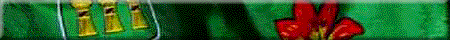
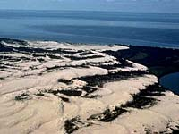
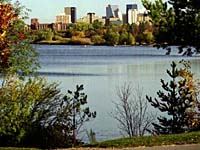
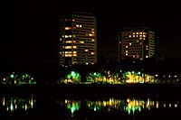
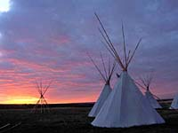

The Prairies
The Parks
The Lakes
The Fishing
The Wildlife
The Country Life
The City Life
The History
The Events
The People

 The Kildeer Badlands are in Grasslands National Park while the Big Muddy Badlands were the refuge of notorious outlaws, notably the infamous Wild Bunch, Dutch Henry and Tom Owens. Desert like sand dune areas include the Great Sand Hills, Douglas Provincial Park and Good Spirit Lake. The most dramatic of all are the Athabasca Sand Dunes bordering Lake Athabasca. The most northerly dunes in the world, they are also among North America's largest, reaching 30 metres high.
 The city is inextricably linked with the Royal Canadian Mounted Police. Once the headquarters for the force, the Mounties training academy is still located in the city and the RCMP Museum is popular with visitors. A colourful sight is recruits drilling twice weekly year round, and, in the Sunset Retreat Ceremony on summer Tuesdays. Nearby historic Government House has been restored to its turn-of-the-century elegance. Wascana Centre park incorporates a man-made lake and is the site of the grand Saskatchewan Legislative Building, Saskatchewan Centre of Arts, Saskatchewan Science Centre and, the boyhood home of former Canadian premier John G. Diefenbaker. Another popular attraction, the Regina Plains Museum in the Old Post Office relates the history and culture of the Plains Indians as well as the geological history of the province.  Saskatoon was founded as a Temperance colony by early settlers in the late 1800's on the banks of the scenic South Saskatchewan River. The Saskatoon of today is a far cry from their ideals. The city's name comes from the Cree word for purple berries which thrive along the river. The river is one of the key elements in the city's appeal. One of Canada's fastest growing urban centres and the province's largest city, Saskatoon is a vibrant, cosmopolitan city of bars, restaurants and shops, and a busy hub of commerce, industry and education. Art, theatre and music lovers are well catered to.  The riverbank has been developed into a network of trails, promenades and parks. Concerts are held in the riverside parks and riverboat cruises operate in summer. The University of Saskatchewan campus houses Saskatoon's first school and oldest building - the Little Stone School House. Other notable attractions in the city are the Western Development Museum with its 1910 Boomtown street, the Ukrainian Museum of Canada and the Mendel Art Gallery. The Wanuskewin Heritage Park near the city is an interpretation centre covering 6,000 years of Indian history.
|